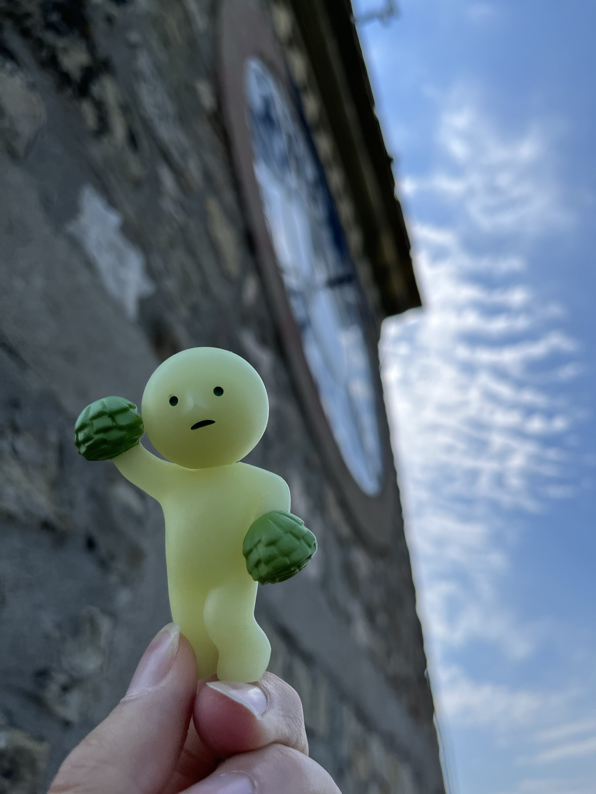

heyo mommy!
it’s me, smatt! it’s my turn today, but tbh there’s not as much to say since today was mostly driving
we liked the monasteries a lot so we wanted to see the mountains up close before we left kalambaka. we did get close enough for a decent view so smark had try a classic pose heh
even better was walking through the town to get to the viewpoint! everything was so cute and there were beautiful flowers everywhere
then we got some gas and bought some snacks for the ride. we ended up getting tomato cheetos, oregano lays, and cheese corn chips (last one was at smike’s insistence). we’ll update on how they taste tomorrow hehe
first stop was some clock tower (edit: smark here. trikala byzantine tower) along the way home. it was built in 19something inside of an old byzantine fortress, so the inside was super nice although smad still hit his head really bad and had to keep ducking... once we climbed like maybe 6 flights of stairs, we reached the top. the walls were very thick and sturdy stone but for some reason smad was so scared and couldn’t even get close to the edge. the view of the town of trikala was really cool and we got some nice pics smike sat inside grandma’s hat
after that we went to the other part of the fortress, where we saw the cool battlements with thin slits for the archers. there was also what they called the “powder building” that looked so cool, a bit medieval actually
we also saw a turtle! tortoise? idk

next stop was thermopylae, which is what the 300 "WE ARE SPARTA" movie was based on! we stopped by the museum for a bit and learned a bunch about the battle of marathon and then the persian war where the battle of thermopylae happened. they had a pretty neat video presentation that showed graphics of how the battle unfolded, and then they took us into a room with these massive touchscreen TVs that had so much info about the background to the war. smad found it interesting but auntie insisted on reading every little bit so she kept making him go back when he tried to skip to the next slide lol
all in all we probs spent almost an hour here so gramps was having a great time by the time we came back hehe
we finally got to our hotel in athens around 7 and immediately left for dinner. we found this local restaurant called abri that turned out to be right inside a neighborhood. it looked a bit sus at first but the food was great! the squid had mustard on it but after the initial shock wore off it was actually p good
the only thing is that we liked the fries so much that we ordered some extra that ended up being a bit much lolol
we went back to the hotel and just chilled for the night cuz we have an early flight tomo. smike sat in on dad’s manicure session but otherwise we just scrolled through reddit and then slept lol
it was a bit of a boring day but i still had fun with the family! surprisingly no one fought today but we’ll see what happens tomorrow. miss you mom!
love,
smatt (and others)